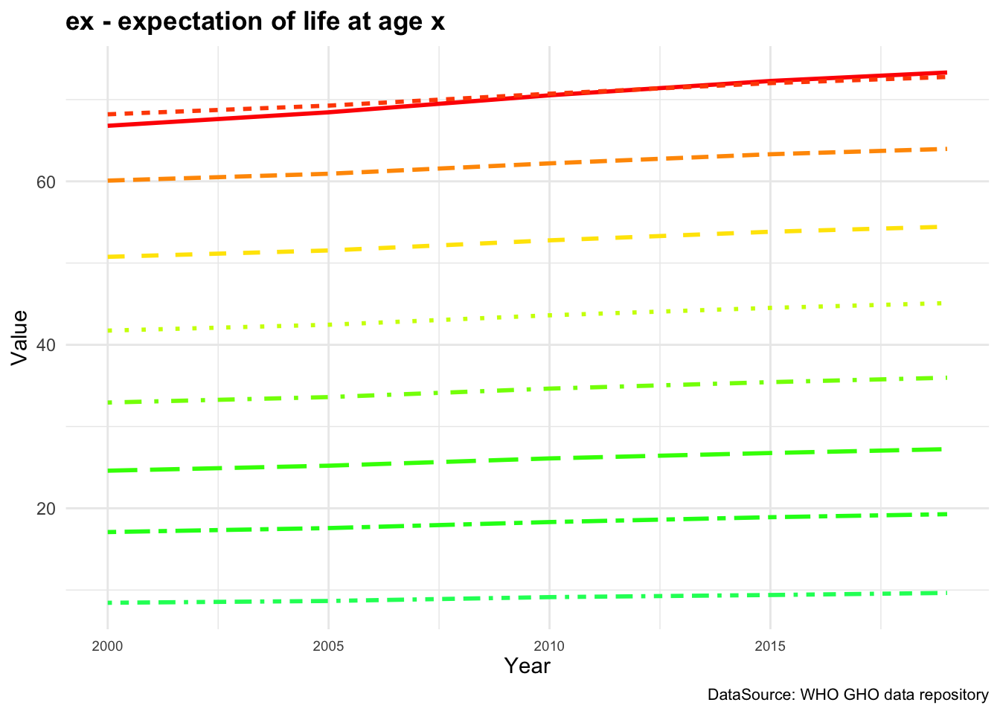
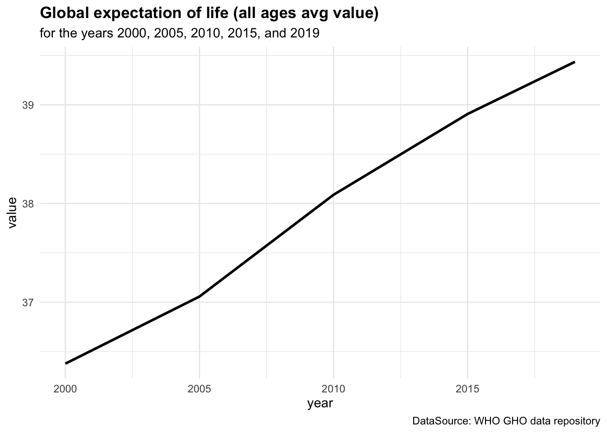
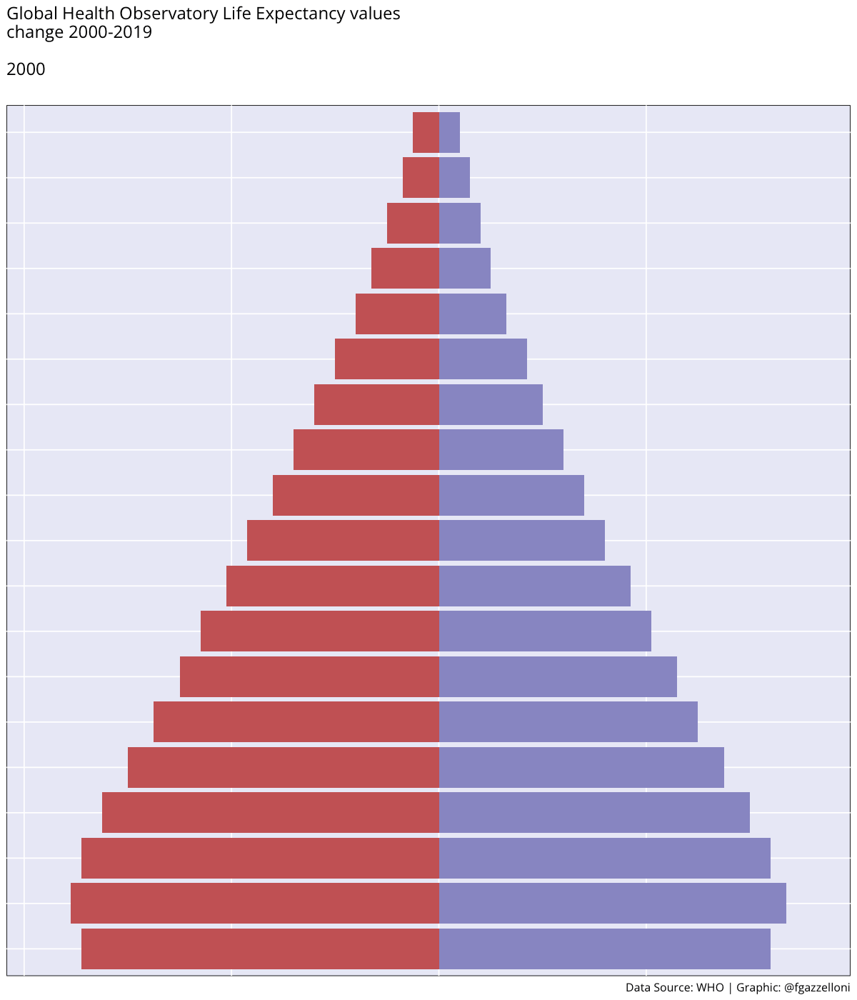
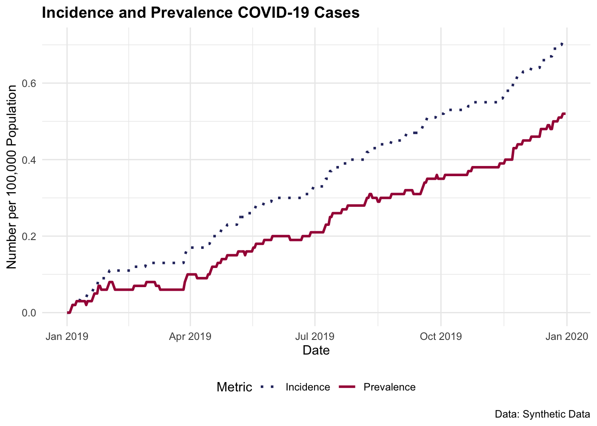

| age | lx | ndx | nLx | Tx | ex |
|---|---|---|---|---|---|
| 40-44 | 92380 | 1320 | 458599 | 3530204 | 38 |
| 45-49 | 91060 | 1737 | 450958 | 3071605 | 34 |
| 50-54 | 89323 | 2547 | 440248 | 2620647 | 29 |
4 Metrics Components
Learning Objectives
- Understand the construction and interpretation of life tables and life expectancy measures
- Analyse mortality levels and rates to assess population health dynamics
- Distinguish between incidence and prevalence and their relevance in disease monitoring
- Interpret disability weights and severity levels in the context of burden of disease estimation
In Chapter 3, we discussed the importance of health metrics in assessing the overall health status of a population and guiding the allocation of health resources. We have seen how to calculate key metrics by providing direct calculations of each of them, but haven’t yet discussed the components that make up these metrics. In this chapter, we will investigate: life expectancy, mortality rates, incidence and prevalence, and disability weights. These components are crucial for understanding the burden of diseases and injury at both global and population levels.
4.1 Cause-Specific or Population-Wide
Health metrics are essential tools for evaluating the health status of a population and guiding public health interventions. They provide valuable insights into the burden of disease and injury, helping policymakers and public health officials make informed decisions about resource allocation and health policy. By combining these metrics, policymakers and public health officials can make informed decisions about how to improve the health outcomes of a population and reduce the burden of disease and injury.
What are the components of these health metrics, and how are they calculated?
The evaluation of health metrics begins with the assessment of their components, which is crucial because results strongly depend on the types of life tables, mortality rates, and disability weights used in the analysis. Furthermore, it is important to consider whether the objective of the analyses is cause-specific or population-wide. This can significantly impact the granularity of the health metrics components, as in alignment with general principles in epidemiological research and health metrics analysis, discussed in the Global Burden of Disease (GBD) study methodologies.1
Cause-specific metrics focus on disease intervention planning, such as assessing the burden of HIV or tuberculosis on specific populations. Population-wide metrics, on the other hand, are ideal for broader health policy decisions, like overall mortality rates or life expectancy, and provide a comprehensive view of the health landscape.
The results of health metrics calculations can vary significantly based on various factors, including geographic location, the type and severity of diseases or injuries, the specific causes of death or disability, and the age groups analysed (whether age-standardised or covering all ages). Additional variation arises from the chosen time points of analysis and whether the metrics are calculated across both sexes or specifically for males or females. Moreover, the disability weights applied can differ depending on the condition’s severity, its impact on quality of life, and other contextual parameters, resulting in tailored calculations that reflect local health challenges more accurately.
In this chapter, practical examples and case studies are provided to illustrate the process of applying the components to the metrics. By understanding the structure of the components, you will be better equipped to analyse and interpret health data and make informed decisions about health policy and resource allocation.
4.2 Life Tables and Life Expectancy
The first component is the life expectancy, used for calculating the YLLs as in Equation 3.1. More specification about life tables used to calculate the life expectancy is in the Appendix A. As a key parameter in the calculation of health metrics, life expectancy is essential for estimating the number of years lost due to premature death.
The standard life expectancy is defined as the average number of years a person is expected to live based on current mortality rates, an important indicator of the overall health status of a population used to compare the health outcomes of different populations over time. It is calculated based on the probability of survival at each age, taking into account the mortality rates for that age group.
In life tables, the probability of survival and the mortality rates across different age groups are used for estimating the number of remaining expected life years. These tables provide crucial insights into the longevity patterns within a population, enabling researchers and policymakers to predict life expectancy trends and to assess public health strategies effectively.
Where lx is the number of people alive at the beginning of the age, ndx is the number of people dying between age x and x+1, nLx is the number of person-years lived between age x and x+1, Tx is the total number of person-years lived by the cohort of persons alive at age x, and ex is the expected remaining lifetime at age x.
In the context of calculating Disability-Adjusted Life Years (DALYs), specifically for the component related to Years of Life Lost (YLLs), ex (the expected remaining lifetime at age x) is typically used rather than overall life expectancy from birth (le). This is because YLLs are calculated based on the difference between the age at death and the expected age at death, which is more accurately represented by the remaining life expectancy at a specific age.
To understand why the expected remaining lifetime at a specific age is used in the calculation of YLLs, consider the following example: if a person dies at age 50, the YLLs are calculated based on the difference between the expected remaining lifetime at age 50 and the actual age at death. This approach provides a more precise measure of the years of life lost due to premature death, as it accounts for the age-specific mortality rates and the probability of survival at that age.
While the life expectancy at birth provides an overall measure of the average number of years a person is expected to live, the expected remaining lifetime at a specific age is more relevant for calculating YLLs, as it reflects the impact of premature death on the remaining years of life for individuals at different ages.
4.2.1 Global Health Observatory Life Tables
The Global Health Observatory (GHO) Life Tables are essential tools provided by the World Health Organization (WHO) to support global health monitoring and assessment. They are part of the broader GHO data repository, which serves as WHO’s gateway to health-related statistics for its 194 Member States. The GHO life tables provide data on life tables and life expectancy for different age groups. These tables are collected in the {hmsidwR} package and used to show how to derive key health metrics.
# install.packages("devtools")
devtools::install_github("Fgazzelloni/hmsidwR")library(tidyverse)
library(hmsidwR)The hmsidwR::gho_lifetables dataset contains five variables:
- indicator: as shown in Table 3.1
- age group: from <1 to 85+ in 5-year classes
- sex: female, male, and both
- value: indicators value
- year: from 2000 to 2019
gho_lifetables %>%
filter(indicator == "ex", sex == "both") %>%
select(-indicator, -sex) %>%
head()
#> # A tibble: 6 × 3
#> year age value
#> <dbl> <ord> <dbl>
#> 1 2000 <1 66.8
#> 2 2005 <1 68.4
#> 3 2010 <1 70.5
#> 4 2015 <1 72.3
#> 5 2019 <1 73.3
#> 6 2000 01-04 69.4The life expectancy rates for each age group are calculated with consideration of the probability of survival based on key parameters such as age, and deaths probabilities for that age. More info about how to calculate the life expectancy can be found in the Appendix A section of this book.
Figure 4.1 (a) shows the ex - expectation of life at age x represented for each age group while in Figure 4.1 (b) ex is represented by averaging value across all age groups from 2000 to 2019.
By averaging across all age groups rather than plotting each line for each age group individually, we can visualise the overall trend in life expectancy over time. This provides a more comprehensive view of how life expectancy has changed across different time.
We can see a difference in the life expectancy values for different age groups, with the highest values for the youngest age groups and the lowest values for the oldest age groups. This reflects the impact of age on life expectancy, with younger individuals having a higher life expectancy than older individuals. The overall trend in life expectancy shows an increase over time, indicating improvements in health outcomes and longevity for the population. More on how to build these plots can be found in the Chapter 10 chapter of this book.


The mathematical formulation for calculating the expectation of life at age x is computed as:
e(x) = \frac{T(x)}{l(x)} \tag{4.1}
where T(x) is the total number of person-years lived by the cohort of persons alive at age x, and l(x) is the number of persons alive at age x.
It shows how ex is strongly related to the value of T(x) and l(x). The total number of person-years lived by the cohort of persons alive at age x (T(x)) typically referred to in demographic and actuarial studies, as a function to measure the cumulative amount of life that members of a cohort can expect to live beyond a certain age. Its changes over time indicate the effects of health policies, technological advancements, and socio-economic conditions on the longevity and health of populations.

4.2.1.1 Exercise
For example, at age 50, what is the life expectancy value if the total number of person-years lived by the cohort of persons alive at age 50 is 2,370,099 and the number of persons alive at age 50 is 89,867 ?2
4.3 Mortality Level and Rates
Another fundamental component of health metrics is the mortality level which indicates the number of deaths in a population. In the calculation of YLLs if the number of deaths are cause-specific, they are calculated for different diseases or injuries. If the number of deaths are population-wide, they are calculated for the entire population.
This component represents the count of deaths at each age or for specific diseases within a given time period. Data for this component is collected from vital registration systems, health surveys, hospital records, and epidemiological studies.
Here is a table containing the mortality rates for different age groups in two regions. The mortality rates are expressed as the number of deaths per 1,000 population in each age group. Data are used to illustrate the variation in mortality rates across age groups and regions, providing insights into the health risks faced by different populations.
| Age Group | Region A Mortality Rate (per 1,000) | Region B Mortality Rate (per 1,000) |
|---|---|---|
| 0-1 | 40.5 | 30.0 |
| 1-5 | 5.2 | 4.0 |
| 5-10 | 1.8 | 1.5 |
| 10-15 | 0.9 | 1.0 |
| 15-20 | 1.2 | 1.3 |
| 20-30 | 1.5 | 1.8 |
| 30-40 | 2.0 | 2.2 |
4.3.1 Understanding Death Counts and Mortality Rates
While mortality rates themselves are not directly used in the formula for the calculation of YLLs, they are crucial for understanding the broader context of health risks and for estimating the death counts in populations where direct data on deaths might be incomplete or unreliable. In regions or for populations where vital registration data are incomplete, mortality rates derived from sample surveys or demographic models can be used to estimate the expected number of deaths.
| Metric | Country X | Country Y |
|---|---|---|
| Total Population | 5000000 | 20000000 |
| Total Deaths | 25000 | 40000 |
| Mortality Rate (per 100,000) | 500 | 200 |
An analysis of the mortality rates alongside YLLs provides a full picture of the health challenges faced by a population. While YLLs emphasise the impact of premature death, mortality rates help in understanding the probability and distribution of these deaths within the population.
The mortality rates can be calculated in different ways, depending on the specific nature of the analysis. In general, what is considered as the most common mortality rates is the Crude Mortality Rate (CMR), which represents the number of deaths per 100,000 population.
CMR= \frac{\text{Number of deaths}}{\text{Total population}}*100,000 \tag{4.2}
4.3.1.1 Example: Deaths Counts derived by Mortality Rates
Let’s simulate malaria death counts in an African population with a Case Fatality Rate (CFR) ranging from 0.01% to 0.40%, and a case-incidence of 59.4 per 1000 population annually.3 Calculate the number of expected malaria cases and the resulting deaths based on this rate for a simulated population of 100,000 individuals over a year:
- Define the Population: Assume a total population of 100,000.
- Set the Malaria Incidence Rate: 59.4 per 1000 population annually.
- Calculate Total Malaria Cases.
- Apply the Case Fatality Rate: Calculate estimated deaths using the CFR range.
# Define the total population
total_population <- 100000
# Define the incidence rate (cases per 1,000 population)
incidence_rate <- 59.4
# Calculate the total number of malaria cases per year
total_cases <- (incidence_rate / 1000) * total_population
# Case fatality rates (min and max)
cfr_min <- 0.0001 # 0.01%
cfr_max <- 0.004 # 0.40%
# Calculate estimated deaths for the minimum and maximum case fatality rates
deaths_min_cfr <- total_cases * cfr_min
deaths_max_cfr <- total_cases * cfr_max#> [1] "Total population: 100000"
#> [1] "Malaria incidence rate per 1,000 population: 59.4"
#> [1] "Total estimated malaria cases per year: 5940"
#> [1] "Estimated deaths at minimum CFR (0.01%): 1"
#> [1] "Estimated deaths at maximum CFR (0.40%): 24"In the simulation scenario, the incidence rate of 59.4 cases per 1,000 annually helps to understand how pervasive malaria is within the simulated population. By applying this rate to the entire population, we can estimate the total number of new cases per year. Combining this with the case fatality rate gives an estimate of the expected number of deaths, highlighting the impact of malaria on public health within that population.
4.4 Incidence and Prevalence
Incidence and prevalence are two fundamental concepts used in epidemiology to measure how often a disease occurs and how widespread it is within a population at a specific time.
- Incidence refers to the number of new cases of a disease that develop in a population during a specific time period. It provides information about the risk of contracting the disease and is usually expressed as a rate — for example, the number of new cases per 1,000 people per year.
The incidence rate, even identified as the cumulative incidence (risk) - r is considered as a measure of the probability the disease occurs in a specified period of time. It quantifies the risk of an individual in the population at risk developing the disease during the specified time period.
\text{Incidence rate}= \frac{\text{number of new cases at time t}}{\text{total population at risk}}*1000 \tag{4.7}
- Prevalence measures the total number of cases of a disease in a population at a given time, including both new and existing cases. It is expressed as a proportion of the population and helps to provide a snapshot of how widespread the disease is.
The prevalence identifies the burden of disease at a specific time, rather than the probability of the disease to impact on the population, it expresses the probability of suffering from a disease, it is based on the total number of existing cases among the whole population.
\text{Prevalence}=\frac{\text{number of new + existing cases at time t}}{\text{total population}} \tag{4.8}
Like incidence, it can be multiplied by a factor of 10^n (where n is typically 1,000, 10,000, or 100,000) to express the prevalence per a standard number of people.
| Metric | January | April | July | October | December |
|---|---|---|---|---|---|
| Incidence (new cases per 1,000 people) | 5 | 3 | 1 | 2 | 6 |
| Prevalence (existing cases per 1,000 people) | 15 | 10 | 5 | 7 | 20 |
In summary, incidence measures the rate of new cases arising within a population over time, while prevalence measures the proportion of existing cases within the population at a specific point in time. These metrics are widely used in the literature and form the basis for many decisions in public health and clinical practice. They are discussed in foundational texts such as “Epidemiology: An Introduction” by Kenneth J. Rothman and in guidelines by health institutions like the Centers for Disease Control and Prevention (CDC) and the World Health Organization (WHO). Both metrics are crucial for understanding the dynamics and burden of diseases within populations.
4.4.1 Use of Prevalence in DALYs Calculation
In the context of the Global Burden of Diseases (GBD) study, the use of prevalence in the calculation of Disability-Adjusted Life Years (DALYs) is pivotal because DALYs aim to measure both the current impact of diseases and their long-term effects on populations as this metric combines years of life lost due to premature mortality (YLLs) with years lived with disability (YLDs). In particular, for YLDs calculations, prevalence rather than incidence is used for several reasons:
- Direct Measurement of Burden: Prevalence data directly reflect the current burden of disease in the population, including both new and ongoing cases. It provides a snapshot of all individuals affected by the disease at a given time, which is essential for calculating the total amount of health loss due to disabilities.
- Incorporation of Disease Duration: Using prevalence allows the calculation of YLDs to incorporate the duration of the disease until recovery or death. This is because prevalence captures both existing and new cases during the period of measurement.
- Complexity of Disease Models: Many chronic diseases or conditions with long duration are better captured through prevalence data. This approach simplifies the modelling by avoiding the need for complex calculations that would otherwise be required to estimate the duration of each new case (from incidence data) and its progression over time.
The choice of prevalence over incidence in the calculation of YLDs thus reflects a pragmatic approach to capturing the current impact of diseases within a population, particularly for chronic diseases where ongoing management and sustained healthcare support are crucial.
4.4.1.1 Example: Calculating YLD for a Disease Using Prevalence
Suppose we want to calculate the Years Lived with Disability (YLDs) for a chronic respiratory disease in a population of 100,000 people. The prevalence rate of the disease is 2%, with a Disability Weight (DW) of 0.3 and an average duration of the disease is 5 years. The YLD is calculated using the formula:
- \text{Prevalent Cases} = \text{Population Size} \times \text{Prevalence Rate}
\text{Prevalent Cases} = 100,000 \times 0.02 = 2,000 \text{ cases}
- \text{YLD} = \text{Prevalent Cases} \times \text{Disability Weight} \times \text{Average Duration}
\text{YLD} = 2,000 \times 0.3 \times 5 = 3,000
So, the YLD for chronic respiratory disease in this population over the average duration of the condition is 3,000 years. This YLD value would then be added to the YLL (Years of Life Lost) for the disease to calculate the total DALY.
4.4.1.2 Example: COVID-19 Incidence and Prevalence
Let’s simulate some COVID-19 cases for a population of 100 000 individuals over 365 days. Consider an average infection time of 5 days or 1/5=0.2 (20%) rate of infection, and an average time of recovery of 20 days which corresponds to a recovery rate of 1/20=0.05 (5%)
library(tidyverse, quietly = T)
population_size <- 100000 # Number of individuals
days <- 365 # Number of days
set.seed(123)
dates <- seq(as.Date("2019-01-01"),
as.Date("2019-12-31"),
by = "day")Cases and recovered are simulated using a Poisson distribution with \lambda of 0.2 and 0.05, respectively. To model the count of rare events in a large population happening within a fixed interval of time or space, the Poisson distribution is particularly useful. It suits the initial spread of COVID-19 in many regions, and assumes that the events (new cases) occur independently of each other, which can be a reasonable approximation in the context of infection spread over short periods.
To apply the Poisson distribution, we use the rpois() function, which generates random numbers from a Poisson distribution with a specified rate parameter \lambda. The probability mass function of the Poisson distribution is given by:
P(X = k) = \frac{\lambda^k e^{-\lambda}}{k!} \tag{4.9}
where X is the random variable representing the number of events, k is the number of events, \lambda is the rate parameter, and e is the base of the natural logarithm.
cases <- rpois(length(dates), lambda = 0.2)
recovered <- rpois(length(dates), lambda = 0.05)The simulated data are then combined into a data frame with the date, number of cases, and number of recovered individuals.
covid_data <- data.frame(
Date = dates,
Cases = cases,
Recovered = recovered)Let’s have a look at the first few rows of the dataset:
#> Date Cases Recovered
#> 1 2019-01-01 0 0
#> 2 2019-01-02 0 0
#> 3 2019-01-03 0 0
#> 4 2019-01-04 1 0
#> 5 2019-01-05 1 0
#> 6 2019-01-06 0 0Calculate the cumulative incidence and prevalence over time:
covid_data <-
transform(covid_data,
Cum_Cases = cumsum(Cases),
Cum_Recovered = cumsum(Recovered))
# Calculate daily incidence and prevalence per 100,000 population
covid_data <-
transform(
covid_data,
Incidence = (Cum_Cases / population_size) * 1000,
Prevalence = ((Cum_Cases - Cum_Recovered) / population_size) * 1000)#> Date Cum_Cases Cum_Recovered Incidence Prevalence
#> 1 2019-01-01 0 0 0.00 0.00
#> 2 2019-01-02 0 0 0.00 0.00
#> 3 2019-01-03 0 0 0.00 0.00
#> 4 2019-01-04 1 0 0.01 0.01
#> 5 2019-01-05 2 0 0.02 0.02
#> 6 2019-01-06 2 0 0.02 0.02total_cases <- sum(covid_data$Cases)
total_recoveries <- sum(covid_data$Recovered)4.4.1.3 Incidence and Prevalence Rates for the Year
(incidence_rate <- total_cases / population_size)
#> [1] 0.00071
(prevalence_rate <- (total_cases - total_recoveries) / population_size)
#> [1] 0.00052
4.5 Disability Weights and Severity Levels
The disability weights measure the severity of the health loss associated with specific health outcomes or diseases, ranging from 0 (no disability) to 1 (equivalent to death). These weights are used to calculate the number of years lived with a disability (YLDs) in the calculation of DALYs, and play a pivotal role between mortality and morbidity when estimating the Health Adjusted Life Expectancy (HALE).
The disability weights are crucial for understanding the impact of diseases and injuries on the health status of a population, if the disability weight of a specific disease is overestimated, the burden of the disease may be overestimated. Conversely, if the disability weight is underestimated, the burden of disease could result underestimated.4
The severity levels of a disease or injury are determined through a combination of clinical data, epidemiological studies, and expert input. These levels are crucial for understanding the burden of disease and for developing strategies in healthcare management and resource allocation. The severity levels can be assigned to be mild, moderate, or high, with respective probabilities reflecting the likelihood of each severity level occurring within the affected population.
| Condition | Disability Weight |
|---|---|
| Mild Depression | 0.15 |
| Moderate Anxiety | 0.30 |
| Severe Stroke | 0.75 |
| Diabetes (without complications) | 0.10 |
| Advanced Dementia | 0.85 |
For determining the disability weights, the severity levels are assigned based on the impact of the condition on an individual’s quality of life. Higher weights are assigned to more severe conditions, reflecting the greater impact on an individual’s health status, while lower weights are assigned to less severe conditions. Hence, the disability weights are calculated based on the severity of the condition and the impact on an individual’s quality of life.
4.5.1 Methodology for Disability Weights
The disability weights can be derived or computed, depending on data availability. Often derived through large-scale population surveys, or expert panels through reviews of clinical descriptions and assessment scores based on understanding and professional experience. These methods involve trade-off exercises, such as Time Trade Off (TTO)5 or paired comparison tasks.6 Through surveys the respondents are asked to choose between different health states or to trade life years in different health states against a standard of full health. Expert panels would assess the severity of different health states based on clinical descriptions and their professional experience, rating the severity on a scale from 0 (no disability) to 1 (equivalent to death).
Computed disability weights methods can vary from applying techniques such as Analytical Hierarchy Process (AHP)7 method used where health states are systematically compared in a pairwise fashion, and judgements about their relative severity are quantified. Or Combining Results from different methods and different populations to produce a set of disability weights that reflect a consensus view. Statistical models might be used to aggregate these results and ensure that they are consistent across different scales.
The Global Burden of Disease (GBD) study led by the Institute for Health Metrics and Evaluation (IHME) is one of the most comprehensive efforts to estimate disability weights for a wide range of health conditions. The GBD study periodically updates and refines disability weights based on extensive global surveys and expert consultations. In the 2010 iteration, for instance, IHME used community surveys across multiple countries, including Bangladesh, Indonesia, Peru, and Tanzania, and an online survey to gather feedback on how people perceive the severity of different health states. Respondents were asked to rank or rate hypothetical health conditions, which provided data for calculating standardised disability weights.
4.5.1.1 Disability Weights Data
Here is an example of a table containing the disability weights for twelve combinations of different conditions such as Infectious disease, Non-communicable diseases, and other health conditions.
Data are from the results of a systematic analysis of Global burden of 369 diseases and injuries in 204 countries and territories, 1990–2019.8 The table can be downloaded from the {hmsidwR} package, and contains the first two cause-specific disability weights for the year 2019, as well as the severity level of the condition set as to be mild, moderate, severe, and combined for selected communicable, and Non-communicable diseases. To access the data:
library(hmsidwR)
disability_weights <- hmsidwR::disweightsThe table here shows the first 6 rows of the disability weights for cause1, severity, and disability weights for the year 2019 for 204 countries and territories.
disability_weights %>%
filter(year == 2019) %>%
select(specification, severity, dw) %>%
head()
#> # A tibble: 6 × 3
#> specification severity dw
#> <chr> <chr> <dbl>
#> 1 Infectious disease, acute episode mild 0.006
#> 2 Infectious disease, acute episode moderate 0.051
#> 3 Infectious disease, acute episode mild 0.006
#> 4 Infectious disease, acute episode mild 0.006
#> 5 Infectious disease, acute episode mild 0.006
#> 6 Infectious disease, acute episode mild 0.006If we focus on the first cause of disability for infectious disease, we can see that the disability weight varies along with the severity level. This indicates that the condition associated with a moderate level of severity has a disability weight of 0.057. This is set to reflect the impact of the severity condition on an individual’s quality of life.
library(hmsidwR)
disability_weights <- hmsidwR::disweights
disability_weights %>%
filter(year == 2019,
cause1 == "Infectious disease") %>%
group_by(severity) %>%
summarize(dw = mean(dw))
#> # A tibble: 4 × 2
#> severity dw
#> <chr> <dbl>
#> 1 mean 0.219
#> 2 mild 0.0148
#> 3 moderate 0.0572
#> 4 severe 0.1624.6 Summary of the DALYs’ Components
4.6.1 YLLs Components
The components of YLLs include several factors that contribute to the calculation of premature death due to a disease or injury. These components are:
Age at death: The age at which a person died due to a disease or injury is a crucial component of YLL. The earlier the age at death, the greater the impact on potential years of life lost.
Life expectancy: The expected age at death in a population without the disease or injury is an important component of YLL. This value is used to compare the actual age at death with the expected age at death and determine the number of years of life lost.
Standard life expectancy: To make comparisons across populations and over time, YLL is often expressed relative to a standard life expectancy, typically set at an age of 70 years.
Population size: The size of the population affected by a disease or injury is another important component of YLL. A larger population will have a greater impact on overall YLL, regardless of the age at death.
Cause of death: The cause of death is also considered when calculating YLL, as different causes may have different impacts on potential years of life lost.
4.6.2 YLDs Components
The estimation of YLDs requires certain epidemiological parameters such as prevalence, incidence, case-fatality rate, relative risk, odds ratio, hazard ratio, mean, incidence ratio, severity, duration and remission\index{Remission.
In particular, we are interested in the major factors that contribute to the calculation of the number of years lived with a disability due to a disease or injury. These components are:
Prevalence and Incidence: The prevalence of a condition is the number of cases of a particular disease or injury present in a population at a given time. This is an important component of YLD as it determines the number of people who are affected by a disease or injury and the overall impact on the population. The incidence is the impact of new cases on a population in a specified time period, and it is calculated by considering the number of new cases affected by a condition divided by the size of a population. Both incidence and prevalence can be used in the calculation.
Disability weight: The disability weight reflects the severity of the disability caused by a disease or injury. It is used to quantify the impact of a condition on quality of life, with higher weights assigned to more severe conditions.
Prior to 2010, the calculation of YLDs included elements of discounting and age weighting, with discount rates that typically ranged from 3% to 4% per year. Considering the future years of healthy life valued less than present years, the practice aimed to reflect the economic theory of time preference, where immediate benefits are preferred over future benefits.
However, due to its complexity and ethical implications, this approach has been criticised. By 2010, the World Health Organization (WHO) and other health organisations began to consider simplifying the methodology. The focus shifted to only the disability weights used to quantify the severity of different health conditions, leaving aside the element of discounting
Age: The age of the person affected by a disease or injury is also considered when calculating YLD. Conditions that occur at an earlier age will have a greater impact on the number of years lived with disability.
Population size: The size of the population affected by a disease or injury is another important component of YLD. A larger population will have a greater impact on overall YLD, regardless of the age of the affected individuals.
Duration of disability: The duration of disability is also considered when calculating YLD. Conditions that last for a longer period of time will have a greater impact on the number of years lived with disability.
4.6.3 DALYs Components
Both YLLs and YLDs are components of the DALYs and are used to provide a comprehensive assessment of the impact of disease and injury on a population. By combining YLLs and YLDs, the DALYs take into account both premature death and the impact of disease or injury on quality of life, providing a more comprehensive view of the overall burden of disease.
DALYs are especially useful in guiding the allocation of health resources as they provide a common numerator, allowing for the expression of utility in terms of dollar/DALY.
For example, in Gambia, the provision of the pneumococcal conjugate vaccine costs $670 per DALY saved. This number can then be compared to other treatments for other diseases, to determine whether investing resources in preventing or treating a different disease would be more efficient in terms of overall health.9
4.7 Case Study: Germany Lung Cancer Study
For this case study, we used data from the GBD study for Germany, related to the number of deaths due to lung-cancer in 2019. Data are available in the {hmsidwR} package and, and includes the upper and lower bounds of the estimates and the 5-yrs age group for both sexes. We do not have information for the 0-4, 5-9 and 85+ age groups.
Here we can see the first 6 rows of the data, that we are going to use to calculate the YLLs, the YLDs and finally the DALYs.
hmsidwR::germany_lungc %>%
select(age, sex, prevalence, dx) %>%
head()
#> # A tibble: 6 × 4
#> age sex prevalence dx
#> <chr> <chr> <dbl> <dbl>
#> 1 10-14 male 0.08 0.322
#> 2 10-14 female 0.18 0.457
#> 3 10-14 both 0.13 0.779
#> 4 15-19 male 0.48 1.27
#> 5 15-19 female 0.9 1.56
#> 6 15-19 both 0.68 2.83Joining germany_lungc with the GHO life tables (gho_lifetables) we can build a new dataset with all information needed for calculating the YLLs for the lung cancer deaths in Germany in 2019.
gelung_YLL <- germany_lungc %>%
filter(sex == "both") %>%
left_join(gho_lifetables %>%
filter(year == 2019, indicator == "ex") %>%
select(-indicator, -year) %>%
rename(life_expectancy = value)) %>%
group_by(age) %>%
reframe(dx, life_expectancy, YLL = dx * life_expectancy)
gelung_YLL %>%
head()
#> # A tibble: 6 × 4
#> age dx life_expectancy YLL
#> <chr> <dbl> <dbl> <dbl>
#> 1 10-14 0.779 66.4 51.7
#> 2 15-19 2.83 61.6 174.
#> 3 20-24 6.15 56.8 349.
#> 4 25-29 13.5 52.1 704.
#> 5 30-34 43.0 47.4 2041.
#> 6 35-39 105. 42.8 4502.Now to calculate the YLDs due to lung-cancer we need to consider not fatal disability status. This can appear in conjunction with other conditions, or morbidities, that are not fatal but are acting together with the lung-cancer.10 The disability weights are available from GBD study11 are the same as those found in the disweights dataset.
lung_dw <- hmsidwR::disweights %>%
filter(year == 2019,
str_detect(sequela, "lung")) %>%
select(sequela, dw)So, 0.451 is the disability weight for the metastatic phase of lung, or lung cancer. We can use this value together with the prevalence of the disease to show how to calculate the YLDs for the lung cancer deaths in Germany in 2019. The number of lung cancer cases in Germany in 2019 is 34,000, and the prevalence of the disease is 0.0004 for all ages and sex. While considering 5-yrs age groups with a common disability weight of 0.451. Total YLDs can be calculated as the sum of the product of the prevalence and the disability weight for each age group.
prev_germany_lungc <- germany_lungc %>%
filter(sex == "both") %>%
select(age, prevalence)
prev_germany_lungc %>% head()
#> # A tibble: 6 × 2
#> age prevalence
#> <chr> <dbl>
#> 1 10-14 0.13
#> 2 15-19 0.68
#> 3 20-24 0.98
#> 4 25-29 1.66
#> 5 30-34 3.85
#> 6 35-39 9.24gelung_YLD <- prev_germany_lungc %>%
mutate(dw = 0.451, YLD = prevalence * dw)
gelung_YLD %>%
head()
#> # A tibble: 6 × 4
#> age prevalence dw YLD
#> <chr> <dbl> <dbl> <dbl>
#> 1 10-14 0.13 0.451 0.0586
#> 2 15-19 0.68 0.451 0.307
#> 3 20-24 0.98 0.451 0.442
#> 4 25-29 1.66 0.451 0.749
#> 5 30-34 3.85 0.451 1.74
#> 6 35-39 9.24 0.451 4.17gelung_YLL %>%
select(age, YLL) %>%
left_join(gelung_YLD %>% select(age, YLD)) %>%
mutate(DALY = YLL + YLD)
#> # A tibble: 16 × 4
#> age YLL YLD DALY
#> <chr> <dbl> <dbl> <dbl>
#> 1 10-14 51.7 0.0586 51.7
#> 2 15-19 174. 0.307 175.
#> 3 20-24 349. 0.442 350.
#> 4 25-29 704. 0.749 705.
#> 5 30-34 2041. 1.74 2043.
#> 6 35-39 4502. 4.17 4506.
#> 7 40-44 10814. 10.0 10824.
#> 8 45-49 28982. 28.3 29010.
#> 9 50-54 73451. 58.7 73510.
#> 10 55-59 121449. 101. 121550.
#> 11 60-64 137749. 139. 137888.
#> 12 65-69 135861. 164. 136025.
#> 13 70-74 108057. 169. 108226.
#> 14 75-79 95872. 136. 96007.
#> 15 80-84 66681. 112. 66793.
#> 16 85+ 35158. 77.1 35235.(YLLs <- sum(gelung_YLL$YLL))
#> [1] 821896.1
(YLDs <- sum(gelung_YLD$YLD))
#> [1] 1000.589
(DALYs <- YLLs + YLDs)
#> [1] 822896.6Per 1000 population, the YLLs, YLDs, and DALYs for lung cancer deaths in Germany in 2019 are 821, 1, and 822, respectively. These metrics provide a comprehensive view of the impact of lung cancer on the health status of the population, combining the years of life lost due to premature death with the years lived with disability.
DALYs / 1000 # DALYs per 1000 population
#> [1] 822.8966The value of the metrics changes when different disability weights are adopted. It is noteworthy that the value for the Years Lived with Disabilities (YLDs) is often quite small compared to the contribution made by the Years of Life Lost (YLLs) in the calculation of Disability-Adjusted Life Years (DALYs). This disparity highlights how mortality frequently dominates the overall disease burden in many health evaluations, underscoring the critical impact of premature death on public health metrics.
For instance, consider the disability weights for lung cancer as calculated in a study tailored to the Korean population.12 These weights are subdivided into four groups corresponding to the stages of the disease, from 1 to 4. Each stage reflects increasing severity and a corresponding increase in the disability weight. Such gradations are crucial for accurately reflecting the progression of the disease and its escalating impact on patients’ lives. This differentiation allows health policymakers and researchers to fine-tune interventions and allocate resources more effectively, targeting the stages that contribute most significantly to health deterioration.
| Cause of Disease | Disability Weights | lower | upper |
| Trachea, bronchus and lung cancers (stage 1) | 0.600 | 0.542 | 0.656 |
| Trachea, bronchus and lung cancers (stage 2) | 0.738 | 0.686 | 0.785 |
| Trachea, bronchus and lung cancers (stage 3) | 0.758 | 0.710 | 0.801 |
| Trachea, bronchus and lung cancers (stage 4) | 0.906 | 0.873 | 0.932 |
In conclusion, disability weights have a fundamental role in influencing the overall calculations of DALYs, as they reflect the severity of health conditions and their impact on quality of life. Assigning appropriate weights to different diseases and injuries might be challenging, but it is essential for accurately assessing the burden of disease and guiding health policy decisions. The case study on lung cancer in Germany illustrates how the combination of YLLs and YLDs provides a comprehensive view of the health impact of a specific condition, helping to inform public health strategies and resource allocation.
Theo Vos et al., “Global Burden of 369 Diseases and Injuries in 204 Countries and Territories, 1990–2019: A Systematic Analysis for the Global Burden of Disease Study 2019,” The Lancet 396, no. 10258 (October 2020): 1204–22, doi:10.1016/S0140-6736(20)30925-9.↩︎
Answer: e(50) = T(50)/l(50) = 2,370,099/89,867 = 26.4 (see “Life Expectancy for CP, VS, TBI and SCI,” n.d., https://www.lifeexpectancy.org/lifetable.shtml).↩︎
“World Malaria Report 2022,” n.d., https://www.who.int/publications-detail-redirect/9789240064898.↩︎
Minsu Ock et al., “Disability Weights Measurement for 289 Causes of Disease Considering Disease Severity in Korea,” Journal of Korean Medical Science 34, no. Suppl 1 (February 2019): e60, doi:10.3346/jkms.2019.34.e60.↩︎
Anna K. Lugnér and Paul F. M. Krabbe, “An Overview of the Time Trade-Off Method: Concept, Foundation, and the Evaluation of Distorting Factors in Putting a Value on Health,” Expert Review of Pharmacoeconomics & Outcomes Research 20, no. 4 (August 2020): 331–42, doi:10.1080/14737167.2020.1779062.↩︎
Jürgen Rehm and Ulrich Frick, “Establishing Disability Weights from Pairwise Comparisons for a US Burden of Disease Study,” International Journal of Methods in Psychiatric Research 22, no. 2 (May 2013): 144–54, doi:10.1002/mpr.1383.↩︎
“Analytic Hierarchy Process,” Wikipedia, March 2024, https://en.wikipedia.org/w/index.php?title=Analytic_hierarchy_process&oldid=1214553274.↩︎
Theo Vos et al., “Global Burden of 369 Diseases and Injuries in 204 Countries and Territories, 19902019: A Systematic Analysis for the Global Burden of Disease Study 2019,” The Lancet 396, no. 10258 (October 2020): 1204–22, doi:10.1016/s0140-6736(20)30925-9.↩︎
“Disability-Adjusted Life Year,” December 8, 2023, https://en.wikipedia.org/w/index.php?title=Disability-adjusted_life_year&oldid=1188922629.↩︎
Michael Porst et al., “The Burden of Disease in Germany at the National and Regional Level,” Deutsches Ärzteblatt International 119, no. 46 (November 2022): 785–92, doi:10.3238/arztebl.m2022.0314.↩︎
Ihmeuw/Ihme-Modeling (Institute for Health Metrics; Evaluation, 2024), https://github.com/ihmeuw/ihme-modeling.↩︎
Ock et al., “Disability Weights Measurement for 289 Causes of Disease Considering Disease Severity in Korea.”↩︎